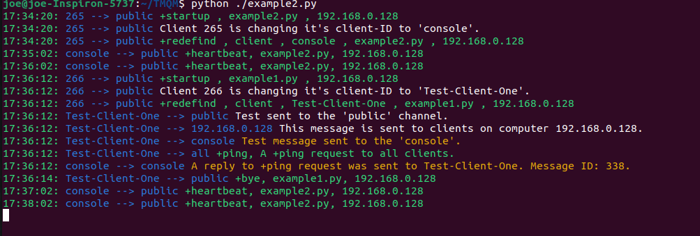

Version 4.0.0
Written by Joe Roten, 2023/07/12
TheTinny Message Queue Manager(TMQM) allows programs, called the Clients, to ‘broadcast‘ text message to other Clients on the network. This allows clients to share messages and data, across multiple computers, and multiple programming languages.
This is done with very little overhead,
and in a very simple way to implement.
This differs from the traditional client/server model in that any client can broadcast a text message to a group ( called a channel ). A channel may consist of just one other client, or a group of clients, or ALL the clients on the network. Any client may be a member of many different channels. This is why I chose to use the word ‘broadcast‘ rather than ‘send‘.
If you are just looking for code to copy/past, or looking to get started quickly, then THIS is the section your looking for.
Step 1:
Download the files. See the next section for instructions.
Step 2:
Step 3:
Next, you should run startup.py. This will scan your network for tmqm and record it‘s IP address to a local text file.
Step 4:
Finally, you can copy/past code from example1.py, example2.py or example3.py to create your own Client program.
Read the rest of this documentation if you have questions.
Thanks, Joe.
Option 1:
You can get everything you need by downloading this file, and unzipping it into a folder.
https://www.gsw7.net/files/tmqm.zip
Option 2:
There is also a GITHUB repository. The command to clone the repository is:
git clone https://github.com/JayNetor/TMQM.git
The tmqm Ubuntu package, along with the Python module pytmqm.py, must be installed manually.
As of this writing, there is NO PiPy ( The Python Package Index repository ) option to install.
To install manually: see the below sections titled
I may, from time to time, submit an updated version of TMQM and it‘s associated files. When an update becomes available, I will upload a new zip file to the the website, and ‘commit‘ the updates to the GITHUB repository. So you might want to check for any updates from time to time.
Not listed in any particular order.
The Client program(s) can broadcast ( send ) and receive text messages by sending requests to a Host program. The Host program should be running on the same network segment ( the same WiFi router ) as the Clients.
Here I use the word ‘broadcast‘ because a text message sent by any client on the network, can be received by ALL the other clients on that same network.
The Client programs can be written in different programming languages, and running on different devices.
Each text message includes information about
Limitations:
Note: If you are running the Host on a Raspberry Pi or other SBC ( single board computer ), be sure it has at least 4 GB of ram. The more memory, the better. The Host is small, but the Message Queue can grow to be quite large. So be sure you have enough ram for the project.
The Host can be running on the same computer as the client(s), or it can be running on a different computer on the same WiFi router.
There should be only ONE instances of the Host running on a network segment ( on the same WiFi router ).
To start the Host on a Ubuntu computer, an executable called ‘tmqm‘ is included with this documentation. To start the Host, the command is: ./tmqm
To start the Host on a Windows or Mac system, you will need to first compile the source code ‘tmqm.c‘, and then run the resulting executable. Instructions on how to do this are included bellow.
After the Host is up and running, you will need to run setup.py. This will scan the devices on your network segment ( your WiFi router ), looking for the Host.
When it finds the Host, it will record the IP address to a local text file called ‘TMQM-HostIP.txt‘. This file will be saved into the current working directory.
When a Client program starts, it will read the IP address from ‘TMQM-HostIP.txt‘ and ues that IP address to communicate with the Host.
The setup.py script dosen‘t do anything other than scan for the Host, and record the IP address to this text file. Nothing more.
If for any reason the IP address of the Host computer changes, simply run setup.py again to scan for the new IP address.
This file ( setup.py ) is licensed under a "Creative Commons License". So you are free to use this file in your own projects as long as you follow a few simple rules. See the accompanying file licnese.md for details.
After you have started the Host, and run the setup.py script,
you can then test by running the Python script example1.py.
It is often said that ‘a picture is worth a thousand words‘.
Will, I believe that a few examples is worth a thousand lines of documentation.
And so… I invite you to look at the file example1.py, example2.py and example3.py. These python scripts are very simple example of clients, showing how messages are broadcast and received. These Python scripts will run on Linux, Windows, and/or Mac.
When you run example1.py, keep in mind that any other client running on the network can also receive the test messages being broadcast. Likewise, messages sent by any other client on the network will be received by example1.py.
Please feel free to uses these examples as a starting point for creating your own clients.
Sample output of example2.py:

A channel is a case-sensitive string that defines to whom the message is sent.
Example: A message sent to the ‘public‘ channel, is intended to be received by all clients who are a member of that channel.
send( "public" , "This is a message sent to all clients in the ‘public‘ channell." )
A Client‘s ID is also a channel. It‘s just a channel which only one client is a member of.
send( "147", "This is a message sent only to client 147." )
When I client starts, it is AUTOMATICALLY joined to the following channels:
A channel is:
Predefined channels:
This error message may appear when you start the Host program (tmqm).
This error message means that you are trying to start a second instances of the Host program on a computer that is already running the Host.
You can only run ONE instances of the Host of a computer at a time.
There should be only ONE instances of the Host running on the Network Segment ( on the same WiFi router ).
If for any reason you need to KILL the Host (tmqm) program on an Ubuntu computer, the command is:
pkill tmqm
It really is just that simple.
The Client() class makes writing TMQM clients a breeze. It does all the heavy lifting for you, allowing you to focus on what you are actually trying to achieve.
The file pytmqm.py is a Python module that contains the TMQM Client() class.
The scripts example1.py and exampe2.py make uses of this module / class. Refer to these scripts as examples of how this works.
There is NO documentation for pytmqm.py in this readme.md file.
Why ? Because the documentation is in pytmqm.py itself.
Just open the file with the text editor or IDE of you choice. Everything is fully documented and explained inside the file.
This file ( pytmqm.py ) is licensed under a "Creative Commons License". So you are free to use this file in your own projects as long as you follow a few simple rules. See the accompanying file licnese.md for details.
A client can broadcast a text message to the other clients, by issuing a ‘send‘ request to the Host.
This request is a string of characters, sent by a socket connection, to the Host.
The low-level syntax of the ‘send‘ request is:
send,To,From,MessageText
Where:
- To (string) - is a client ID or channel to whom the message is intended.
- From (string) - is the ID of the client that is sending the message.
- MessageText (string) - is the message being sent.
There should be NO spaces before or after the first 3 commas of the ‘send‘ request.
The word ‘send‘ must be in lower case.
Remember that the To and From strings are case-sensitive.
If your client does not have a client ID, you can uses ‘noReply‘ in it‘s place. This tells the system that any replies to this message will simply fall into the big black-hole of ‘Expired Messages‘. This is useful for IoT devices that only send something, like soil-temperature to the ‘public‘ channel, and don‘t expect any replies.
Messages will expire ( be deleted ) from the Message Queue after 10 minutes of having been sent. This is to ensure that there is always plenty of free memory for new messages.
A client can receive the next waiting message in the Message Queue by issuing a ‘recv‘ request to the Host program.
This request is a string of characters, sent by a socket connection, to the Host. Another string of characters is received over the same socket connection, as a response to the request.
Text messages are received in the order that they were sent. That‘s to say, the Message Queue is a FiFo queue ( the First message In will be the First message Out ).
The low-level syntax of the ‘recv‘ request is:
recv,Index
Where:
- Index (string) - Is a index number of a message in the queue.
There should be NO spaces before or after the comma.
The world ‘recv‘ must be in lower-case.
The ‘recv‘ request will return a comma delimited string of 4 parts:
NewIndex,To,From,MessageText
Where:
- NewIndex (string) - is the queue index number of the message.
- To (string) - is a client ID or channel to whom the message is intended.
- From (string) - is the ID of the client that is sending the message.
- MessageText (string) - is the message being sent.
Each message in the Message Queue has a unique Index number. The ‘recv‘ request will return the next message in the queue who‘s Index is greater than the Index given in the request.
Example: request: recv,14 May return the string: 15,public,46,This is a test message.
In this example, we passed the Index of 14 in the request, and a value of 15, which is the Index of the next message in the queue who‘s Index is greater than 14, was returned. This value of 15 should be what we uses to request the next message after this one.
Remember that messages older than 10 minutes old are also expiring ( being deleted from the queue ). This can, and will, cause gaps in the Index sequence.
Lets say that you retrieve message 14, but before you can retrieve the next one, messages 15,16,17 have expired.
So, ‘recv,15‘ will return the message who‘s Index is 18, which is now the next message who‘s Index is greater than 15.
See how that works :)
Lets say that we have reached the bottom of the queue. That‘s to say, we send the request ‘recv,40‘ but there are no messages in the queue who have an Index greater than 40. In this case, the comma delimited string that will be returned is ‘40,None,None,None‘. Note that the returned Index is 40, not 41. So, 40 is the Index we should uses the next time we issue an ‘recv‘ request.
The next message that will be added to the queue will have an Index of 41, and therefore, the request ‘recv,40‘ will return that new message.
Will, I would suggest not spending a lot of time on this. All of this explanation is really just for documentation sake. I recommend that you just copy/past my example code into your projects and run with that. Life‘s too short to let yourself get lost in the weeds.
If a client sends an ‘helo‘ request to the Host program, the string "Queue Manager Responding” will be returned. The ‘helo‘ request is simply a way of testing if the Host program is responding on the IP address given. Nothing more.
The word ‘helo‘ must be in lower case, and must NOT have any spaces after it.
So, why ‘helo‘ and not ‘hello‘?
Will, I lifted this ideal from the SMTP ( Simple Mail Transfer Protocol ) protocol. And in SMTP, the request is ‘helo‘. I just felt that it wasn‘t worth the time and confusion to change it.
The ‘init‘ request is used to retrieve some basic info about the client from the Host program. It is usually preformed on startup of the client. This request only returns information, and does not actually initialize any kind of client slot on the Host.
It‘s use is completely optional.
The word ‘init‘ must be in lower case, and must NOT have any spaces after it.
If a client sends an ‘init‘ request to the Host program, a 3 part comma delimited string is returned. The format of this returned string is:
clientID,bottomIndex,clientIPaddress
The clientID (string) is a string that can be used as the client‘s ID. Numbers start at 0, and are incremented each time an ‘init‘ request is made by any client. The client really only needs a client ID if it needs to receive a reply to a broadcast message. You could also uses the Python module uuid() to do this, but since the ID need only be unique in context of the Host, having a long 16 character string for an ID is a bit of an overkill.
If a Client has no need of receiving any replies to it‘s messages, like an IoT temperature monitor, then the string ‘noReply‘ can be used in place of the Client‘s ID.
The bottomIndex (string) is the Index of the last (bottom) message in the Message Queue. This is the value that can be used for your first ‘recv‘ request. However, the client could simply start with an Index of zero, in which case it may received messages that were broadcasts 10 minutes before it started. But if that‘s not an issue, starting at zero is OK.
The clientIPaddress (string) is the IP address of the client as seen by the Host. It just easier to get this value from the Host program rather than trying to get it from a DNS server. This value should be included in the reply to any ‘+ping‘ requests. It can also be used as a channel for the ‘send‘ request; like broadcast a message to all clients on ‘192.168.0.35‘ for example.
If your a C++ programmer, I invite you to look at the file example4.cpp at this time.
This C++ source code is a very simple example of a client, showing how messages are broadcast and received. It is basically the same as example3.py, except it‘s written in C++ instead of Python.
Please feel free to copy/past this code as a starting point for creating your own clients.
You can write a TMQM client is any programming language. It need only be able to send and receive strings of text to/from the Host program.
I would start by re-creating the query() function from pytmqm.py, into your target language.
You will also need code to read the HostIP from the file created by setup.py ( TMQM-HostIP.txt ).
Once you have a query() function up and working, then the door to the Host is open !
There exists on the Internet these things called Code Converters. You can feed to them a piece of Python code, and the results could be the exact same code written in Java, or Perl, or C#.
These services are often FREE.
To find a Code Converter that would meet your needs, do an Internet search for a term like ‘Converter Python Java‘.
Remember to bookmark the Converters you like.
This subject is kind of ‘out-of-scope‘ for this document. But I felt that I had to at least mention it.
The answer is...YES.
A TMQM client can be made to work on a low-power IoT device like an Arduion, ESP32, or home-brewed circuit without a WiFi connection . The solution is to use low-power 433 Mhz communication devices to create a secondary ‘network‘ .
You can use a low-power 433 Mhz transmitter, attached to the Tx pin of an ESP32, to transmit the output text to any nearby receiver.
You will need to create a Client (called a Gateway ) that would receive the requests being broadcasts over 433 Mhz, and pass them by WiFi connection to the Host.
If this is something that you might be interested in, I invite you to do an Internet search for the terms ‘433 Mhz Arduino‘.
I also invite you to share your experiences of this over the Internet. If we all share what we learn, it will make things easier for those who follow.
Wait ? ... WHAT ? ... BASIC ???
Why the heck would anyone want to write a client in BASIC ?
This example is simply to make a point.
- And that point is:
- You can write a TMQM Client in ANY PROGRAMMING LANGUAGE. Even BASIC.
In the example program example1.py, the connection to the Host program is made over a network Socket. But what if you are writing a client in a programming language that does not support sockets? Like Fortran, Cobol, or Basic?
In this case, we could use a utility called NETCAT.
Netcat is a networking utility program available for Linux, Windows and Mac. It is used primarily by network administrators for troubleshooting and firewall work. But it can also be used as a ‘backdoor‘ to communicate with the Host program.
To install Netcat on your computer, simply do an Internet search for “How to install Netcat”, and follow the instructions.
Here are a few examples of using Netcat to communicate with the Host program. You will need to replace my hostIP with the one for your host.
The port will always be 65432.
echo "helo" | netcat 192.168.0.128 65432 returns: Queue Manager Responding. echo "init" | netcat 192.168.0.128 65432 returns: 13,126,192.168.0.128 echo "send,public,13,This is a test message." | netcat 192.168.0.128 65432 returns: OK echo "recv,126" | netcat 192.168.0.128 65432 returns: 127,public,13,This is a test message.
OK, So how can Netcat be used by a client?
Consider the following bit of BASIC. This is using the yaBasic interpreter.
hostIP$ = "192.168.0.128" # print query$( "helo", hostIP$ ) print query$( "init", hostIP$ ) print query$( "send,public,13,This is a test message.", hostIP$ ) print query$( "recv,13", hostIP$ ) # # sub query$( m$, hostIP$ ) k$ = "echo ‘" + m$ + "‘ | netcat " + hostIP$ + " 65432" return system$( k$ ) end sub
The results are:
Queue Manager Responding. 14,13,192.168.0.128 OK 14,public,13,This is a test message.
The source code for ‘tmqm.cpp‘ and ‘tmqm.c‘ are available from the gethub repository, or the zip file ( see ‘download‘ section above).
The files are the same, only the file extensions are different.
To compile the Host program from the source code, the command is:
- Linux: g++ tmqm.cpp -o tmqm
- Windows: gcc tmqm.c -o tmqm.exe
This will create an executable that you can then run on your computer.
The Tinny Message Queue Manager (TMQM), and all associated files and examples, are licensed under a [Creative Commons Attribution 4.0 International License](https://creativecommons.org/licenses/by/4.0/). So you are free to use these file and examples in your own projects as long as you follow a few simple rules.
See the accompanying file license.md for details.
The information presented here is FREE.
But donations to help pay for Coffee, Beer, and Rent are always welcomed.
So, if you would like to buy me a Coffee, please see the donations button at the bottom of my Bio page. http://www.gsw7.net/joe
Thanks.